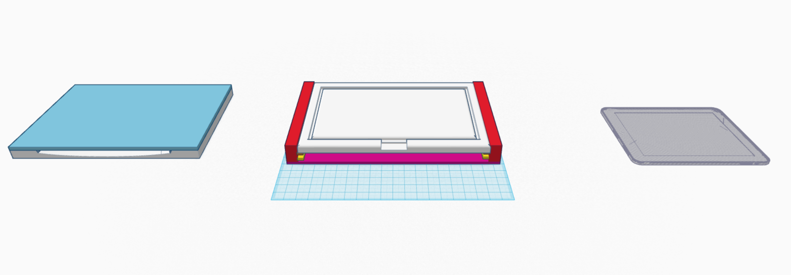
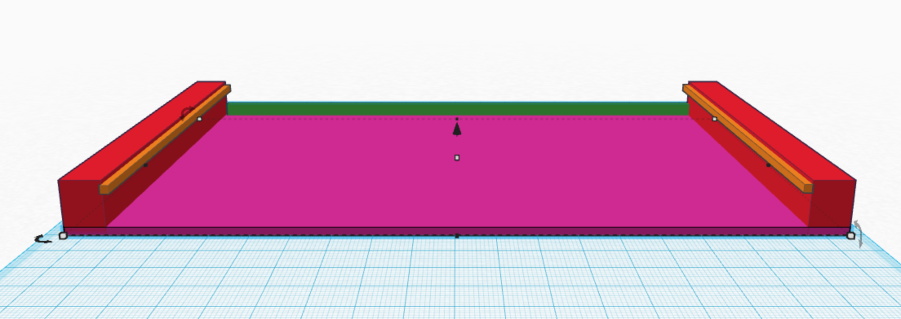
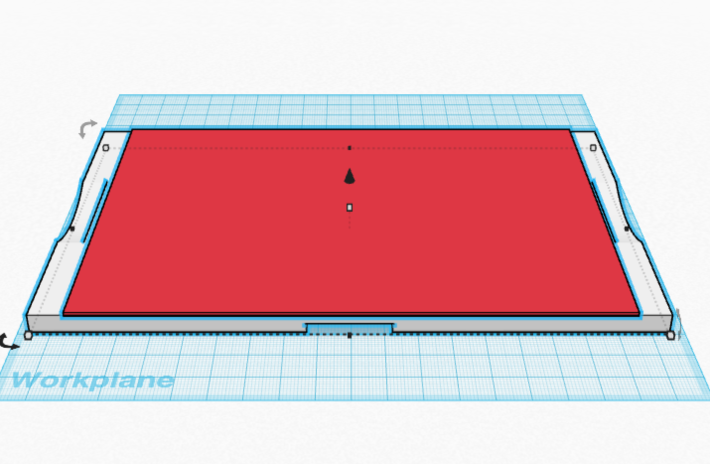
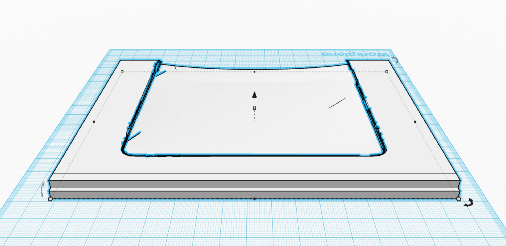
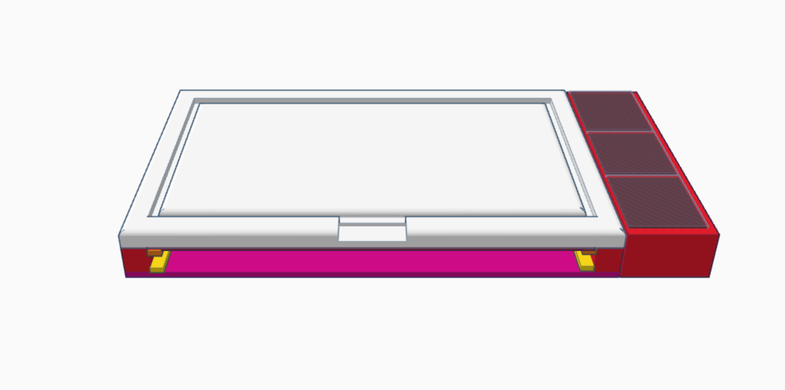
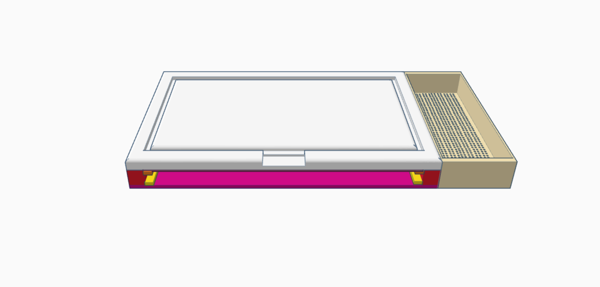
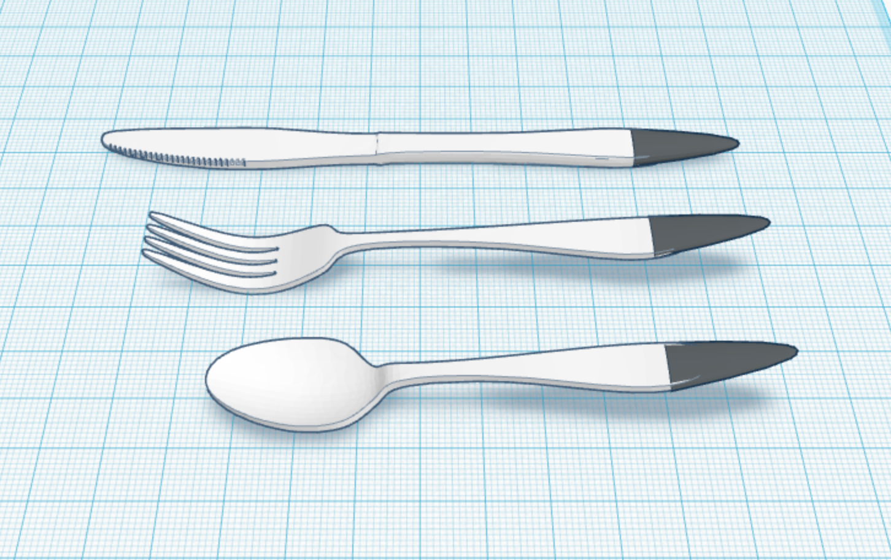

Cutting Board with Ipad Integration
Project for


A render of a pretotype with an Iphone in place of the Ipad
Download Pitch Deck
Download Project Write Up
Final Project For MKTG 292: Creativity
Pitched to Bill Lazaroff, the VP of Product Development and Design at Lifetime Brands
Problem: Design a product that caters to rising kitchen trends and millenials.
Idea: Integrate the Ipad into the kitchen to be used for recipe tutorials and capturing the work of the cook.
Problems: How do we keep the Ipad clean? How do we introduce new functionality to the Ipad? How do we protect the Ipad? How do we keep the design easy to clean? How do we keep the Ipad at the proper viewing angle?
Basic Design: I started by building off of a preexisting product, the chef sleeve cutting board seen below.

It seemed to be the best integration of the two at the time. From there, I used data that my group had gathered on kitchen preferences from a survey. The data told me that a product geared towards millenials would have to prioritize ease of use. I decided that the cutting board would have to be extremely easy to clean. Additional data showed that users had reservations about using their devices in the kitchen due to fear of damage. The design had to protect the Ipad as best as possible.
From Left to Right: The "casette" Ipad holder, the board base, and an Ipad
Design Templates
Replacement: The sleeve in which the ipad resides was replaced with a hard shell container. The front of the container is modeled in glass to allow users to still engage with the Ipad using capacitative touch. The transparency of the glass will allow the user to see the screen while remaining a barrier to food particles. The overall casing has as many flat faces as possible to prevent food particles from being caught anywhere. The glass is removable so that the inside of the enclosure can be cleaned should it require it. The casing overall is built to handle being placed in the dishwasher.
Multiplication: The inner casing acts as a cassete to the cutting board base. Though not pictured, the casette has its own glass covering, so that when it is withdrawn from the base, both pieces can separately be used as cutting boards.
The cutting board base
The top piece of the board. The red piece is in place of the glass.
The "casette" piece shown without the glass.
Product Extensions
Product Extensions: All but one of the proposed product extensions is a physical addition to the board. Most of these additions are meant to interlock with the board through a dovetail-slide design. The last extensions think beyond the cutting board.
Multiple compartments for chopped ingredients.
A strainer
Capacitative cutlery to use the Ipad with dirty hands.
Potential Design Features: Some ideas that were brought up, but ultimately not pitched included slots for knives with embedded sharpeners, bracket stickers (Corners to hold the ipad that can be stuck anywhere), and plates and bowls with embedded Ipad stands.